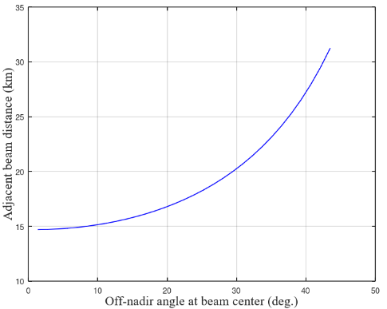
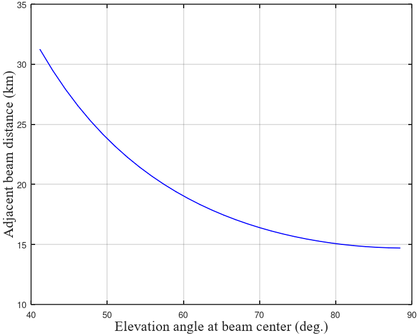
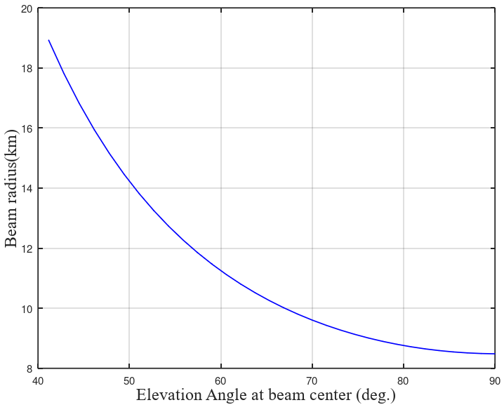
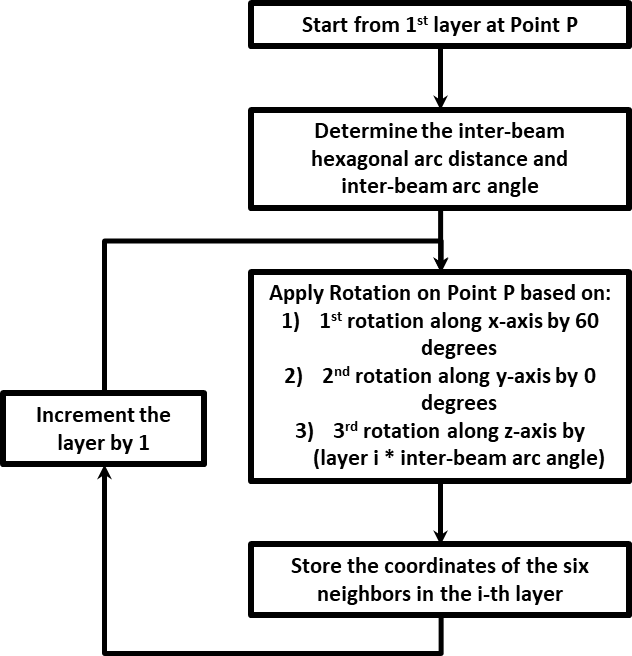
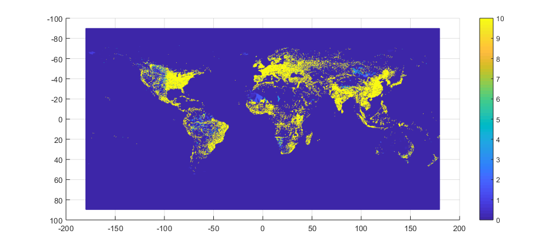

把位置放进三维坐标
原文从 P=(R,0,0) 出发，此处记为 Pg；R=6378 km。整个网格可再旋转到选定的感兴趣区域（Region of Interest，ROI）。
先在球面固定服务波位，再由动态星座更新服务关系与点亮集合，最后按实际接收功率保留主要干扰源。
华为原文 Pg 是固定地面网格锚点；它与当前卫星星下点 P 含义不同。查看大圆构造 ↓
三条大圆生成骨架点，球面线性插值填满各圈。点击地面波位，后两步会跟踪它。
大圆 = 经过地心的平面与球形地球相交得到的圆。圆心在地心，半径等于地球半径；赤道是大圆，一般纬线是小圆。这些参考线用于确定地面波位中心。
华为原文把地面起点写成 P，此处统一记为 Pg。上方通用几何图中的 P 表示卫星星下点；两者的含义分别标注。
原文 Table 9 给出 D 的两种取法：由天线半功率波束宽度推得，或取 50 km。此处默认 50 km；范围滑块用于观察网格尺度。UE 层展示 160 个示意点；原文 Figure 19 以实际人口密度数据驱动非均匀 UE 投放。
原文从 P=(R,0,0) 出发，此处记为 Pg；R=6378 km。整个网格可再旋转到选定的感兴趣区域（Region of Interest，ROI）。
三个平面共用 OPg 轴，依次绕轴转 60°，切出三条大圆。每条大圆提供正反两个方向；沿六个方向每隔弧长 IBD 放一个骨架点。
用球面线性插值（Spherical Linear Interpolation，SLERP）在同圈相邻骨架点之间补点。第 i 圈共 6i 个点，形成局部近似六边形网格。
A、B 是同圈相邻骨架点。地心 O 与 A、B 确定平面 OAB；该平面切出的大圆通常不同于最初三条主大圆。SLERP 沿 A、B 间的短大圆弧补点；灰色虚线是球体内部的直线弦。
地面波位是网格中的目标服务位置；物理波束由某颗卫星指向该位置；小区是逻辑服务区域，原文采用 earth-fixed cell 与 multi-beam per cell。
一颗星可以看见很多地面波位，但同时点亮数由载荷能力和调度决定。不同卫星在不同时间可以指向同一地面位置。
原文“50 tiers、7351 波位”将中心计作第一层：m=49，N=1+3×49×50=7351。
演示用局部球面网格；六边形轮廓表示服务区域。实际半功率足迹由天线方向图与几何投影共同决定。
华为在 Observation 15–17 中指出，UV 平面规则网格投到地面后，越偏离星下点，波束足迹和中心间距越大。这是它提出地面网格方法的出发点。
| 原文 Figure 16 示例 | 星下方向 | 离轴角 35.07° |
|---|---|---|
| 波束中心仰角 | 90° | 51.046° |
| 波束半径 | 8.4 km | 13.82 km |
| 相邻波束距离 | 14.69 km | 23.16 km |
以上为提案正文的示例数值，HPBW=1.62°；图注对星下半径另写 8.48 km。



原文先沿三条大圆生成红色骨架点，再在红点之间 SLERP 生成绿色点。本页第 i 圈取六个骨架方向，相邻骨架点之间分 i 段，整圈共 6i 个中心点。球面曲率使跨圈间距存在小幅变化。

推进时间，依次更新卫星位置、可见性、距离关联与点亮状态。选中的地面波位始终是同一个。
Table 9 给出规模、高度、1 s 位置更新和 distance-based 映射。本页用 53° 倾角圆轨道、均匀轨道面/相位推进示例星座；在满足最低仰角的卫星中选择斜距最短者。
| 卫星 | 仰角 | 斜距 km | 状态 |
|---|
UV 平面仍用于表达天线指向：先由共同地面点求出卫星到地面的单位方向，再投到各自的局部横轴。地面均匀的点，在各星 UV 中的间距会随几何而变化。
用轨道参数得到卫星在地心地固坐标系（Earth-Centered Earth-Fixed，ECEF）中的位置。每 1 s 更新一次几何。
对地面波位 q，计算距离 d=‖s−q‖ 和仰角 e。满足门限的卫星进入候选集合，再按距离确定关联。
在已关联波位中，按单星载荷限制选出当前点亮波束。地面可服务区域、当前点亮集合和 UE 统计区域分别记录。
单星特例从 ROI 正上方出发，沿该点东西向大圆运动。本页以星下方向作局部 z 轴、投影后的东西方向作 x 轴构建 UV。更新时若一颗星的已关联波位超过上限，演示按固定轮转次序每 10 s 更换点亮子集。它是用于显化“关联后还需要调度”的示例规则。
本页计算所生成 ROI 内的点亮链路；完整系统仿真还应扩展外围干扰波位并检查干扰收敛。星座各星的可见性按所选地面点分别计算。
固定一个 UE，计算各点亮波束在它这里的接收功率，降序排列，再累计至目标占比。
Table 9 采用 90% 主要功率建模门限。本页把它展开为“按 UE 接收干扰功率降序、累加到至少 η”的可执行流程。上方条图和数值由当前演示链路计算。
几何筛选：确定当前 UE 可见的卫星，以及 ROI 中已关联并点亮的波束。
资源筛选：保留占用相同时间、频率与极化资源的波束，排除服务波束。
逐项求功率：用卫星到 UE 的斜距、波束指向与 UE 方向的夹角计算 Iⱼ。
累计主要项：令 I₁≥I₂≥…，找最小 K，使 Σ₁ᴷ Iⱼ / Σ₁ᴹ Iⱼ≥η。
推进到下一时刻：重新更新几何、关联、点亮与功率排序。
本页为 L/S 波段下行功率排序示例：f=2 GHz，单束发射功率取 400 W / 32，卫星最大增益 33.126 dBi，UE 增益 −5.5 dBi；用自由空间损耗与简化的圆对称方向图计算接收功率。
方向图近似、同资源占用子集、轮转点亮、UE 朝固定地理方向的偏移均为本页演示设定。点击网格可更换统计点；零占用或当前未点亮时显示无服务状态。
原文 Proposal 29 / Figure 19 提出按人口密度在 ROI 中非均匀投放 UE。开展 SLS 时，应先用实际人口数据生成 UE 与业务负载，再针对每个 UE 重复上述计算，汇总覆盖、SIR、SINR、吞吐量和切换统计。

华为 / 海思 R1-2607480，§3.1 System level Evaluation methodology，Figures 16–19，Observation 15–17，Proposal 29，Table 9。3GPP 原提案归档 ↗
“球面网格 → 动态星座 → 主要干扰”来自提案；本页具体圆轨道倾角、初相位、调度规则、方向图与局部计算范围见各步展开项。显示的 SIR 为交互示例计算值。全部图形与计算在浏览器内运行，参数在三个步骤间联动。